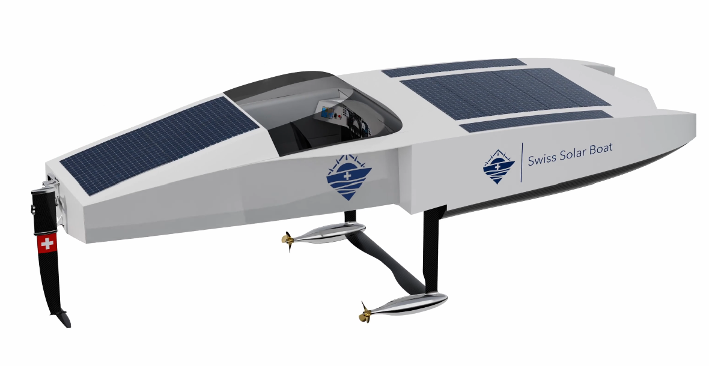

Project context & engineering challenge
EPFL Solar Boat was moving an approximately 7 m full-scale composite hydrofoil boat from detailed design toward production. I treated the hull, internal structure, floats, foil wells and appendages as one interacting load-carrying system rather than isolated components. At this scale, a local change at an appendage interface could alter how load spread through the internal structure and hull.
The engineering objective was direct: determine where the proposed laminates were sufficient and where stacking or local reinforcement had to change before manufacturing. The model needed to cover operating and exceptional cases while remaining efficient enough to support repeated design iterations.
What I was responsible for
I owned the composite modelling and the interpretation needed to turn the results into design iterations.
- I built and iterated full-vessel composite surface models in 3DEXPERIENCE.
- I defined laminate zones and stacking sequences and assessed composite failure.
- I investigated strut, rudder and foil-well behaviour with pseudo-strut and pseudo-rudder models.
- I checked mesh convergence and investigated numerical singularities.
- I compared selected predictions with four-point bending tests and used the findings to iterate layups and reinforcements.
Analysis approach
I represented the structure with composite shells and zones, each with its own laminate definition. The connected full-vessel model preserved the global load path and linked local laminate response to vessel deformation. I varied the modelling detail by area: full-vessel behaviour remained global, while critical interfaces received more focused analysis.
Through the V2 and V3 iterations, I adjusted model fidelity to keep the analyses solvable and useful for design decisions. I used the global model to locate critical interfaces and focused models to answer local questions. The pseudo-strut and pseudo-rudder showed how loads entered the foil wells and transferred through the reinforcement into the surrounding hull structure.

Load cases & load transfer
- Planing
- Flight
- Crash
- Slamming
- Immersion
I assessed planing, flight, crash, slamming and immersion separately because each introduced load through a different part of the vessel. Together, they covered distributed hull response and concentrated loads entering through the appendages instead of collapsing both behaviours into one envelope.
For appendage cases, I followed the path from strut or rudder through the foil wells, local reinforcement and internal structure into the hull. I checked whether deformation and load transfer remained continuous across those interfaces. The simplified studies made this transfer easier to interpret and exposed where the structure, rather than the idealised interface, needed attention.
Composite assessment & numerical credibility
I assigned and iterated laminate definitions by structural zone. I compared the Tsai-Wu failure index with stiffness, deformation and load transfer before changing a stacking sequence or adding reinforcement. This tied every laminate change to the behaviour of its structural zone and the surrounding vessel.
When a local peak appeared, I checked its position, mesh sensitivity, load path and boundary conditions. I refined the mesh and tracked whether the global response converged or only the local peak continued to rise. Peaks confined to idealised constraints or sharp transitions were treated as numerical singularities. Converged responses along the physical load path drove structural changes.
Simulation vs physical testing
I compared FEA displacement with two four-point bending configurations to check the modelled stiffness response against physical measurements. Displacement provided a direct comparison of global stiffness for the two documented test setups.
| Configuration | Measured | FEA | Difference |
|---|---|---|---|
| Configuration 1 | 20.0 mm | 18.8 mm | 6.0% |
| Configuration 2 | 0.90 mm | 0.92 mm | 2.2% |
The close agreement increased confidence in the modelled stiffness for both bending configurations and complemented the convergence and composite-failure checks. The comparison covered these two documented test configurations.
Design iteration & manufacturing outcome
The simulations identified weak areas requiring laminate or local reinforcement changes. I revised the stacking and structural definitions, then reassessed each affected region under its governing case. The response determined whether I changed the stacking sequence or reinforced the load path. Most cases passed after these iterations.
The resulting design progressed to manufacturing by EPFL Solar Boat and NTPT.
What this project demonstrates
Full-system modelling
Composite structural analysis at vessel scale rather than isolated components.
Engineering judgement
Convergence and singularity analysis used to distinguish numerical artefacts from physical structural issues.
Analysis to hardware
Simulation drove layup and reinforcement iterations before manufacturing.